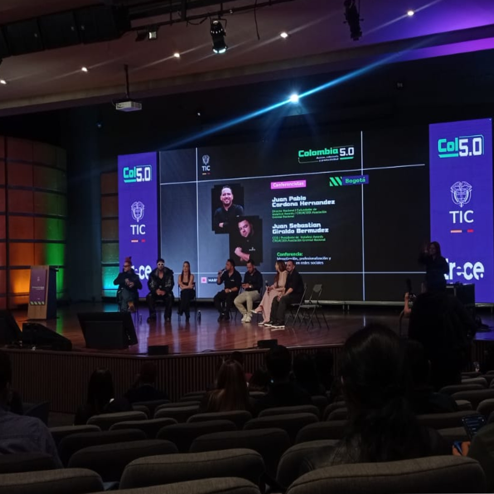
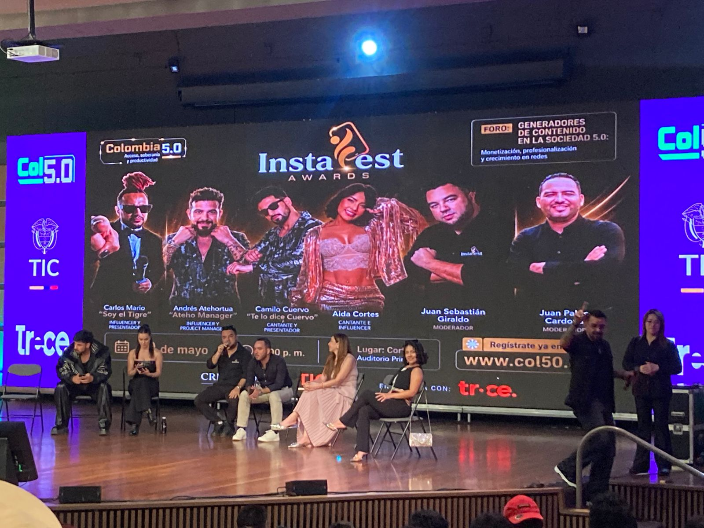
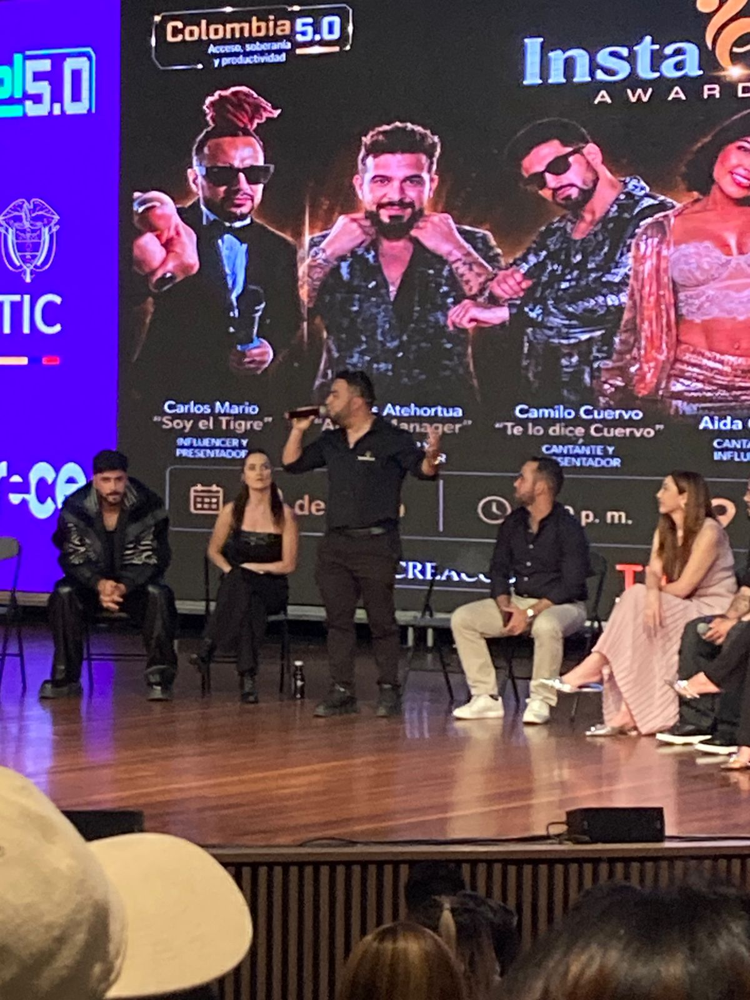
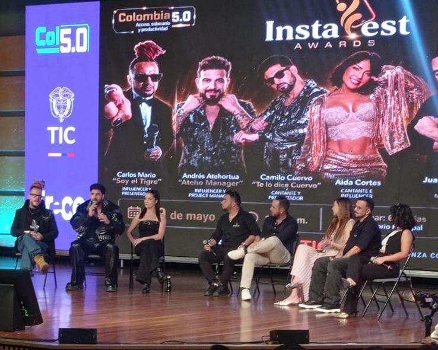
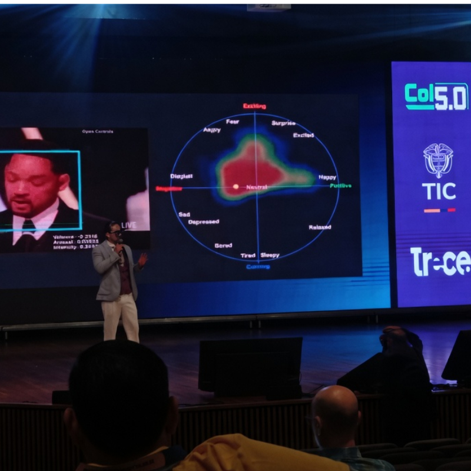
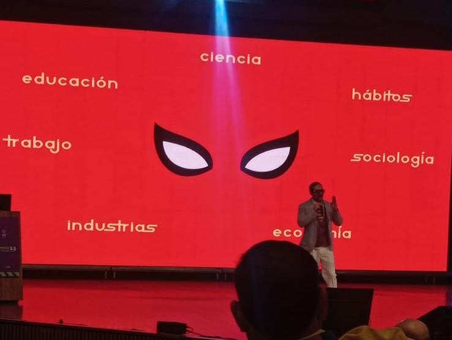
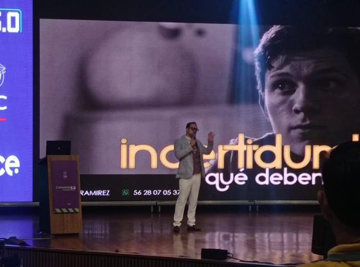
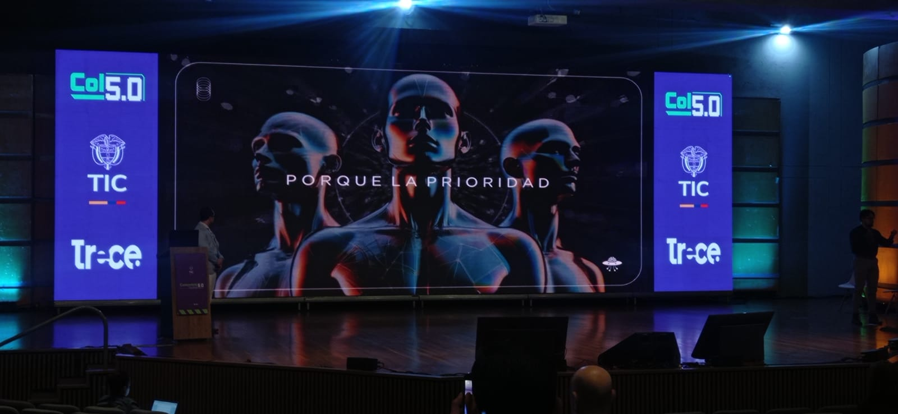
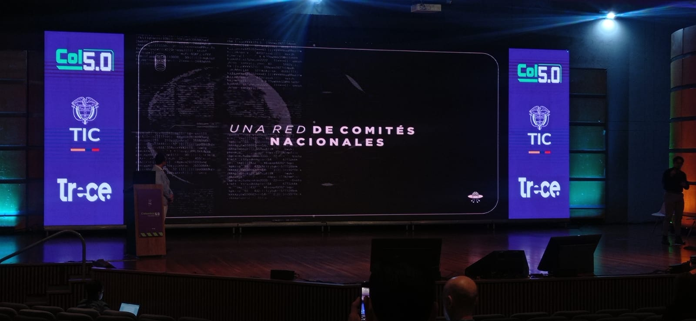
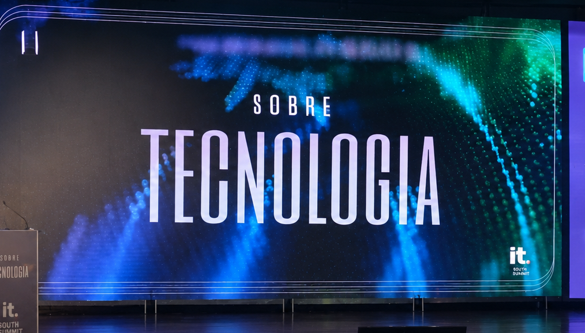

Centro de Manufactura en Textil y Cuero · SENA
Evento tecnológico que explora la inteligencia artificial, la automatización y el futuro digital de Colombia.
Colombia 5.0 es un evento tecnológico nacional que reúne a líderes, académicos y profesionales para explorar las tendencias más relevantes en inteligencia artificial, transformación digital y ética en la tecnología empresarial.
El objetivo de este sitio es documentar, sintetizar y compartir el conocimiento adquirido durante las conferencias y talleres del evento.
En el marco de Colombia 5.0 en Corferias, el panel analizó cómo las plataformas digitales pasaron de ser herramientas de ocio a industrias capaces de mover puntos enteros del PIB. Los panelistas escenificaron una discusión ficticia para demostrar cómo los algoritmos premian el conflicto y la polémica sobre el contenido orgánico.
Se compartieron cifras contundentes: la pauta digital corporativa roza el 80% y la industria de contenidos representa cerca de 4 puntos del PIB en Colombia, generando más ingresos extranjeros que sectores tradicionales. También se explicaron modelos de monetización multicanal, el reciclaje de formatos y el auge de pagos mediante blockchain (USDT) en transmisiones en vivo.
Las redes sociales dejaron de ser un pasatiempo para transformarse en corporaciones intangibles con poder político y financiero sin precedentes. Sin embargo, esta bonanza económica trae consigo un dilema ético profundo: el algoritmo moderno premia la rentabilidad de la discordia. Esta «economía de la atención» empuja a los creadores a sacrificar la autenticidad en el altar de la métrica.
La verdadera «evolución» consistirá en balancear el éxito financiero del algoritmo con el bienestar ético de la sociedad que lo consume, protegiendo especialmente a la niñez de la hipersexualización, el ciberacoso y la sobreestimulación del scroll infinito.
📷 Fotos del evento




Jair Ramírez utilizó la metáfora del universo de Spider-Man para explicar el «súper salto tecnológico» actual. Basándose en el diálogo entre Tony Stark y Peter Parker en Homecoming, advirtió que «si no eres nada sin la tecnología, no te la mereces», criticando la creciente dependencia cognitiva de los dispositivos digitales.
El ponente identificó seis «villanos» de la IA: Electro (coste ecológico de los servidores), Sandman ( vulneración de sistemas), Rhino (hipercaptación de atención con contenido absurdo), Venom (dependencia que anula el razonamiento propio), Doctor Octopus (uso malintencionado con fines peligrosos) y Mysterio (deepfakes y pérdida de la noción de la verdad).
Estamos confundiendo la sofisticación de nuestras herramientas con nuestra propia capacidad intelectual. El «efecto Venom» se manifiesta en algoritmos diseñados para secuestrar nuestra atención, obligándonos a luchar contra los gestos de la pantalla para poder cerrarla. Al delegar memoria, creatividad y razonamiento a un prompt, corremos el riesgo de convertirnos en cascarones vacíos.
La tecnología es moralmente neutra. El traje de Spider-Man no hacía a Peter Parker un héroe; eran sus valores y criterio. El reto no es frenar la innovación, sino asegurar que, cuando nos quiten el «traje digital», sigamos siendo capaces de pensar por nosotros mismos.
📷 Fotos del evento






Términos clave de las conferencias Colombia 5.0.
| Inglés | Español | Definición |
|---|
Después de escuchar las conferencias, me quedé pensando en cómo la tecnología se ha vuelto una parte tan importante de nuestra vida. Está presente cuando estudiamos, trabajamos, buscamos información o simplemente cuando pasamos tiempo en redes sociales. A veces la usamos tanto que dejamos de preguntarnos cómo influye en nuestras decisiones y en nuestra forma de ver las cosas. Por un lado, es evidente que la tecnología nos facilita muchas tareas y nos ayuda a resolver problemas de manera más rápida. Sin embargo, también pienso que debemos tener cuidado de no depender demasiado de ella. Hay momentos en los que preferimos buscar una respuesta inmediata en lugar de intentar analizar o resolver algo por nuestra cuenta. Poco a poco eso puede hacer que dejemos de practicar habilidades que son importantes para nuestro desarrollo personal. Además, algo que me hizo pensar fue la facilidad con la que hoy se puede manipular la información. Cada día vemos imágenes, videos y noticias en internet, pero no siempre sabemos si son reales o no. Por eso considero que es importante aprender a cuestionar lo que vemos y no creer todo de inmediato, ya que una información falsa puede difundirse muy rápido y afectar a muchas personas. También me llamó la atención cómo las redes sociales influyen en nuestro comportamiento. En muchas ocasiones parece que lo más importante es conseguir más visitas, más seguidores o más reacciones. Debido a eso, algunas personas terminan compartiendo contenido polémico o exagerado solo para llamar la atención. Aunque eso pueda traer beneficios económicos, también puede afectar la forma en que nos comunicamos y la calidad de la información que consumimos. En lo personal, todo esto me ayudó a entender que la tecnología no es algo negativo, pero tampoco algo que debamos usar sin pensar. Creo que el verdadero reto está en encontrar un equilibrio, aprovechando todas las ventajas que nos ofrece sin dejar que controle nuestras decisiones o nuestra manera de pensar. Al final, ninguna herramienta debería reemplazar nuestro criterio, porque somos nosotros quienes debemos decidir cómo actuar y qué camino seguir.